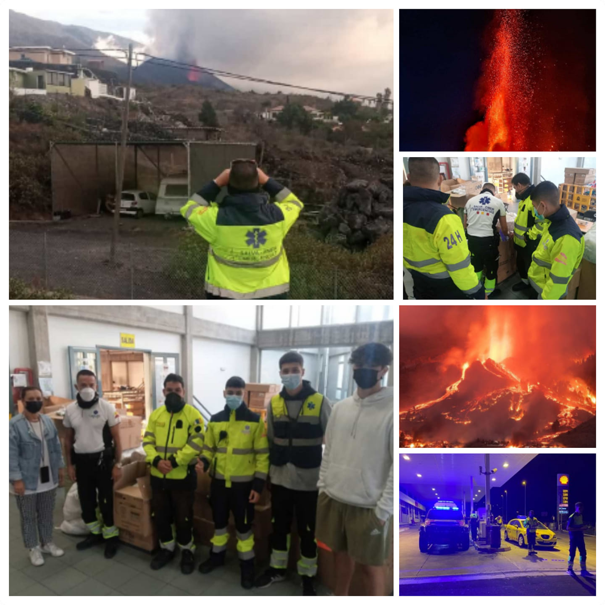

ES
ES
 EN
EN
 DE
DE
 FR
FR
 NO
NO
 IS
IS
Salva-Emer i aksjon
Vitnesbyrd og utvalgte prosjekter med bilder og videoer av våre vellykkede intervensjoner.
Nødsituasjon ved La Palma-vulkanen
Arrangør: RedCOE | Varighet: 4 måneder | Team: 16 fagfolk
Salva-Emer spilte en nøkkelrolle under vulkankrisen, og sørget for sikkerhet og humanitær støtte.
Fase 1
- Perimetersikkerhet i risikoområder
- Evakuering av befolkning
- Distribusjon av forsyninger
Fase 2
- Transport og støtte for familier
- Sikker tilgang for henting av eiendeler
- Dyre redning


Skogbranner på Tenerife og Gran Canaria
Arrangør: Kanariøyenes regjering
- Inspeksjon av terrenget
- Evakuering av befolkning
- Støtte til dyre redning og samarbeid med brannvesenet


DANA i Valencia-regionen
Arrangør: Valencia-regjeringen | Varighet: 15 dager | Team: 4 redningsarbeidere
- Fjerning av rusk
- Distribusjon av hjelp
- Koordinering med frivillige